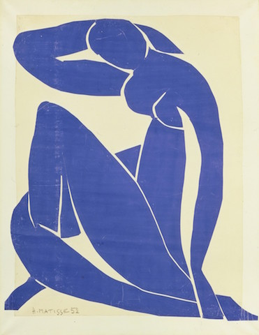
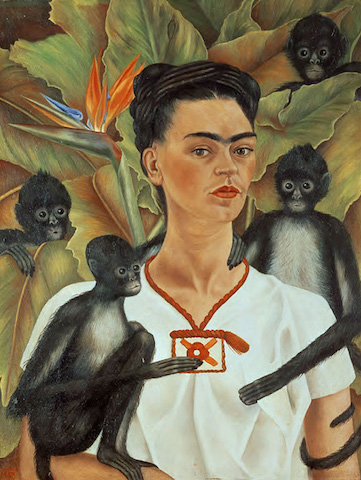
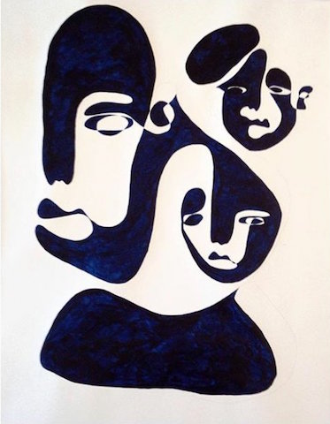

Programmer-in-training with Le Wagon in Berlin, Germany.
|  |
Henri MatisseHenri Matisse was born December 31, 1869, in Le Cateau in northern France. Over a six-decade career he worked in all media, from painting to sculpture to printmaking. Although his subjects were traditional—nudes, figures in landscapes, portraits, interior views—his revolutionary use of brilliant color and exaggerated form to express emotion made him one of the most influential artists of the 20th century. |
|  |
Frida KahloArtist Frida Kahlo was born on July 6, 1907, in Coyocoán, Mexico City, Mexico. Considered one of Mexico's greatest artists, Frida Kahlo began painting after she was severely injured in a bus accident. Kahlo later became politically active and married fellow communist artist Diego Rivera in 1929. She exhibited her paintings in Paris and Mexico before her death in 1954. |
|  |
Christiane SpangsbergChristiane Spangsberg is an artist inspired by originality and imperfection. Back in 2010 she found some drawings of animals made by Picasso, which inspired her to practice the one-line technique. More recently she has been inspired by Fauvism, a style which was developed by a loose group of early twentieth-century modern artists, among them Henri Matisse and André Derain. Although the direction only lasted a few years Christiane seeks to get a deeper understanding of the Fauvism style and work. |
This page has been coded during the Fullstack Program @ Le Wagon, which was probably the best experience of my entire life.